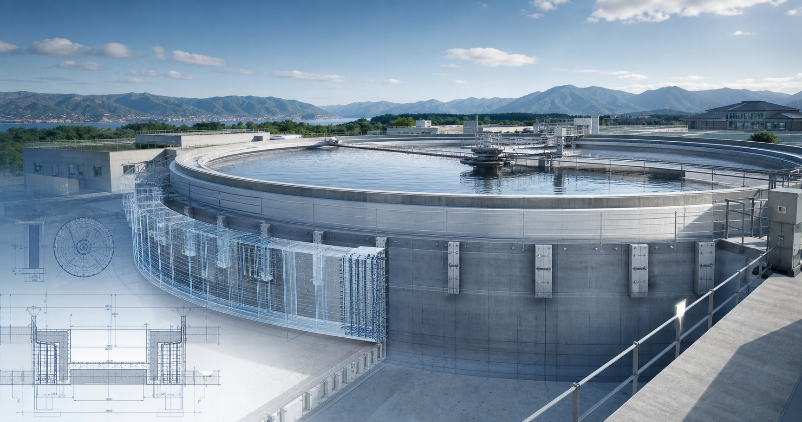

上下水道施設
処理場、ポンプ場、配水・貯留関連施設など、都市インフラを支える施設の耐震・耐水化検討。

Profile
Take設計は、上下水道施設・環状施設を中心に、既存施設の現況整理、課題抽出、対策方針、設計検討、説明資料化を支援します。AIは判断を置き換えるものではなく、複雑な情報を整理し、比較し、説明しやすくするための道具として活用します。
Field
処理場、ポンプ場、配水・貯留関連施設など、都市インフラを支える施設の耐震・耐水化検討。
円形・環状形状を持つ施設の構造特性を踏まえた耐震対策、補強方針、説明資料の整理。
構造設計と設備設計の両方から、施設機能を止めないための現実的な対策を検討。
Work
Credentials
構造設計一級建築士
設備設計一級建築士
上下水道施設・環状施設の耐震対策
Contact
具体的な設計判断、法令適合、構造安全性の確認は、対象施設の資料・条件・関係基準を確認したうえで行います。